Answers
How will you improve LinkedIn’s home page?
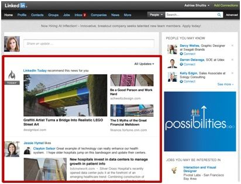
CANDIDATE: Before I make suggestions, I want to review the web page, make sure I understand all the features, and ask clarifying questions.
INTERVIEWER: Sure.
CANDIDATE: My first thought: who is this page for? It’s targeted to the LinkedIn user. The second thought: what does it do?
Candidate points to the big red box, above
CANDIDATE: I believe the primary goal is to show an evolving news feed. Here we see general news, but we could also get updates on our social network — whether people got a new job, connected to other people or received new skill endorsements.
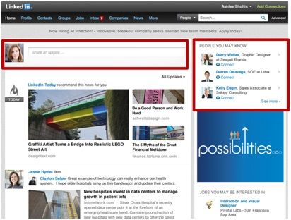
Candidate points to the top two red sections, above
CANDIDATE: The secondary goal is to allow the user to post updates and discover new connections.
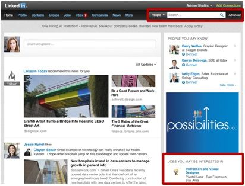
Candidate points to the two red sections on the right hand side, above
CANDIDATE: The third goal is to search for people and identify new jobs.
Just to summarize, there are four things that one could do on this page:
Now that I’m more familiar with the home page, let’s dive into the question. My first thought: what’s the purpose of the redesign? I’m specifically thinking of business objectives such as increasing ad revenue, LinkedIn connections, or 30-day actives. I define 30-day actives as the number of LinkedIn users that have visited the site in the last 30-days.
I’d propose looking at increasing 30-day actives, but I’m open to other suggestions too.
INTERVIEWER: No. Let’s focus on engagement.
CANDIDATE: Next, I want to have a customer in mind for the redesign. Here are four personas that come to my mind:
INTERVIEWER: Okay, we’re short on time. Which persona do you want to focus on?
CANDIDATE: I’d like to focus on the salesperson.
INTERVIEWER: Go on.
CANDIDATE: What are the top use cases for salespeople? Here are the first three I thought of:
In my opinion, the most important use case is finding new customer opportunities.
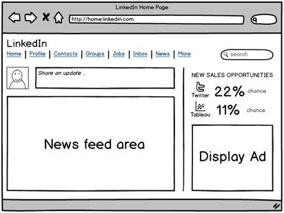
So let me share with you a mockup of what I envision.
Candidate points and walks through parts of the diagram
CANDIDATE: It’s your standard LinkedIn newsfeed: logo, navigation, search box, news feed area, and display ad. Here’s what’s different: the “new sales opportunities” section in the upper right.
As the title describes, this feature proactively identifies new sales opportunities for the customer. For example, there are two new opportunities for Twitter and Tableau Software, a company that helps users display data publicly in attractive ways. Sales opportunities with Twitter and Tableau have a 22 percent and 11 percent chance to close, respectively. These predictions come from our algorithm, which analyzes sales opportunities based on a news event, similarity with existing customers, and the number of close connections to that company.
Clicking on “new sales opportunities,” you’ll see the next page, the “sales opportunity dashboard.”
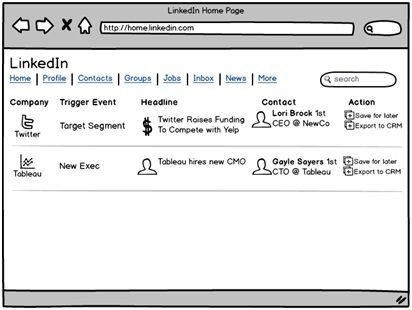
The candidate points to the next page, the sales opportunity dashboard.
CANDIDATE: On the sales opportunity dashboard, the sales person can get more details including:
Comments: The candidate does a good job empathizing with the customer and exploring their needs. The focused choice of the salesperson persona helpfully constrained his creativity to a very specific use case, identifying new customer opportunities. The UI mockups demonstrate the candidate’s ability to visually communicate a design.
How would you improve LinkedIn’s signup process?
CANDIDATE: There are many pages in LinkedIn’s signup flow. To make it manageable, I’m just going to go through one page at a time and discuss the pros, cons, and recommendations for each page.
INTERVIEWER: Sounds good.
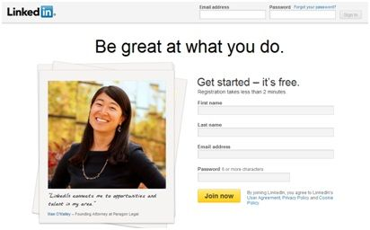
CANDIDATE: Here’s what I like the page. The testimonial validates the service, and the picture makes the service feel friendly. There’s a single call-to-action, “Join now,” with a simple registration process.
The one thing I hate about this page is the headline. The phrase “Be great at what you do” does not tell me what I’m signing up for. I’d recommend that we A/B test better headlines, especially ones that describe what the product does.
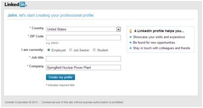
The copy on this page is much clearer than the previous page. The headline tells you that you’re going to create a professional profile.
The radio buttons in the middle create a demarcation between the first two fields and the last two fields. I prefer if they had the Job title and Company fields on top vs. Country and ZIP Code. It seems like a more natural progression to the user.
I don’t like that there’s no indicator on how many steps are left. Lastly, “e. g. 94043” is visually awkward. I’d prefer if “94043” the default text in that field, just like “Springfield Nuclear Power Plant” is the default text.
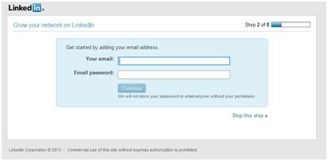
Here the page copy regresses. “Grow your network on LinkedIn” is an ambiguous headline. Additionally, the page doesn’t explain why it needs my email address and password.
From personal experience using LinkedIn, I do know that LinkedIn wants to help me add people to my network. One way they grow it is by importing contacts from my email application, checking whether they’re already on LinkedIn and suggesting connections.
I would recommend testing explanatory text such as, “We make it easy to find colleagues on LinkedIn. Enter your email address and password, and we’ll check if they’re already on the site.”
Despite the poor wording, it is a clever, easy and fast tactic to grow a new user’s network. I bet that users with more connections perceive LinkedIn to be more valuable and use the site more.
As a minor aside, it is good to see that the progress bar is now present.
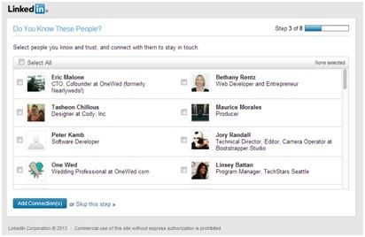
On this screen, LinkedIn suggests people to add to my network. That’s helpful, but creepy.
How does LinkedIn (correctly) know that these people are related to me? As a user, the connection isn’t quite clear. I’ve only submitted basic registration information: title name, country and zip code. How could it deduce that these people work with me, given that none of us work at the same company?
My guess is that they deduced these people based on the fact that all of us log into the service using the same IP address. That makes sense, since we all work in the same co-working space.
Still, I’m worried. How does LinkedIn know that these people are associated with me?
I would recommend that LinkedIn offer a link that explains how they generated these suggestions.
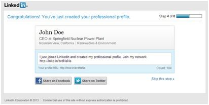
This screen is solid. I see a glimpse of what my LinkedIn profile would look like.
However, it asks me to share a message to my Facebook and Twitter networks. Why do they want me to share? I’d recommend that LinkedIn be clearer about why doing so would benefit me.
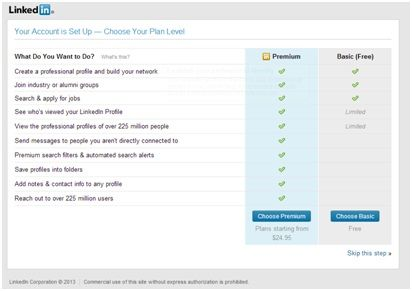
This is a nice, detailed description of LinkedIn. It’s much better than the front page with its headline: “Be better at what you do.”
Visually, the tabular comparison makes it easy to see what I get and don’t get in the premium and free accounts.
However, the up sell feels premature. I just signed up for the service. How do I know if the free service is insufficient? The pricing is greyed out, which could be perceived as underhanded.
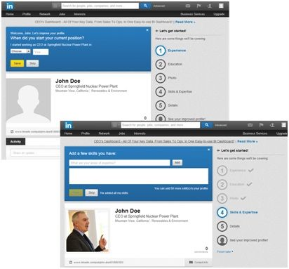
The final page I’ll cover in my analysis is the profile page. I like how the blue box calls my attention. It’s aligned with LinkedIn’s desire to get me to add more data. The progress bar on the right shows how many more actions I need to complete. The checklist tells me how much further I need to go. I like how as I add information, my profile automatically updates. For example, when I added my picture, it automatically replaced the stock silhouette image with my picture.
The “finish later” option is a nice touch —just in case I’m fatigued from filling out forms.
Comments: Candidate does a solid job of critiquing what’s working and not working on the page. However, compared to other candidates, this person did not offer as many suggestions on how to redesign the layout of the page. Most of the recommendations relate to the copy or the top-level objectives of the page.
How would you improve image search?
CANDIDATE: Before I begin, is the goal of improving image search is to improve usage and satisfaction of the product?
INTERVIEWER: Yes.
CANDIDATE: Are there any metrics or time frames that I need to keep in mind?
INTERVIEWER: No.
CANDIDATE: Alright, when I think of image search, the first theme I think about is identification. I can think of a lot of personas who can benefit from image search including:
The persona that intrigues me the most is the secondhand goods seller. I watch a lot of Pawn Stars, a reality TV show based on a Las Vegas pawnshop. I’ve also thought about starting a business in the consignment area.
INTERVIEWER: Okay, continue.
CANDIDATE: The two most critical activities in a pawnshop business are buying and selling products. Buying products that are fake, have low demand or cost too much are the main reasons why pawnshops fail.
I propose that we build a new image search feature that meets the need of the pawnshop owner. Here are top three use cases I have in mind:
Comments: Candidate brainstorms several good personas for image search. His focus on a single persona has come up with some innovative, albeit niche, applications for image search.
How would you improve restaurant search?
CANDIDATE: Before we begin, I have a few clarifying questions. When you say “restaurant search,” I assume you’re referring to finding restaurants in the Google search engine. This is specifically about recommendations, not necessarily finding a specific restaurant, right?
INTERVIEWER: Correct.
CANDIDATE: Before we start our discussion, I want to make sure I understand our objectives. I imagine we’re looking to improve customer satisfaction around restaurant recommendations. We’re not considering other goals, such as increasing revenue, page views, and any other goals?
INTERVIEWER: Bingo. We’re focusing on user experience.
CANDIDATE: Perfect, give me a minute to collect my thoughts.
I see several potential target users. Here are a few that come to mind: first, there are out-of-town travelers who want to book restaurant reservations weeks in advance. Second, there’s a person who wants restaurant recommendations for a group dinner. Third, there are working couples too tired to cook and needing a quick bite.
We don’t have time to focus on all the personas; is there a specific one you’d like me to focus on?
INTERVIEWER: Yes, I’d like you to focus on couples.
CANDIDATE: Okay, we’ll focus on working couples and talk about them in more detail. For working couples, it’s usually a spur-of-the-moment decision. If they weren’t so tired, they would have cooked at home and might have been cost-conscious with their food choices. The working couples we focus on are young professionals, so food quality is important to them. They wouldn’t settle for McDonald’s. They would want food that would be as tasty as what they would have cooked at home. They’re busy and tired, so they want something close to home.
To summarize, their criteria in this scenario is:
Let’s prioritize our feature requests with the matrix below.
| User Story | Customer Wow | Reasonable Alternatives | Implementation Difficulty | Overall |
|---|---|---|---|---|
| Quality indicator | Not impressed | Yes | Low | Lower priority |
| Time-to-eat indicator | Impressed | No | Med | Top priority |
| Price indicator | Not impressed | Yes | Low | Lower priority |
INTERVIEWER: I like your prioritization matrix. Why don’t you tell me how you would implement a time-to-eat indicator?
CANDIDATE: For the time-to-eat indicator, let’s brainstorm some alternatives. Time to eat is dependent on three factors:
Travel time information is available on Google Maps. Partner agreement can be factored In, too. Food wait seems to be hardest to implement and also intellectually interesting, so let’s talk about that.
There are few ways we can estimate food wait times:
There could be a conflict of interest if restaurants provide food wait times, and as far as I know, there are no third-party information sources that provide wait time data.
There are several ways restaurant-goers can help us estimate wait times:
INTERVIEWER: Which one would you recommend?
CANDIDATE: Of all the suggestions here, the last option is my favorite. It gives accurate data about how long it takes for a meal to arrive and the process of checking in and taking photos of food is a familiar process to food lovers, such as the Yelp mobile crowd.
Comments: Candidate distinguishes herself from other candidates by prioritizing the use cases. The time-to-eat feature is unique and likely to distinguish itself from competitors, especially for the “busy working couple” persona that the candidate identified.
How would you improve Google Maps?
CANDIDATE: Here’s how I’d think about improving Google Maps. First, I’d understand our goals & constraints. Then, I’d explore the user and their use cases. I’d then prioritize the use cases and focus on brainstorming solutions for the most urgent use case.
We can consider different goals such as increasing revenue, new user acquisition, engagement and virality. I have engagement in mind, but is there another goal you prefer?
INTERVIEWER: Let’s go forward with an engagement goal.
CANDIDATE: For users, there are a lot of audiences we can target: college students, young professionals, busy moms and retirees. I’d like to focus on brick-and-mortar shoppers. Is that okay with you?
INTERVIEWER: Sure.
CANDIDATE: For a shopper, one of the most frustrating things is when you can’t find what you need. Warehouse stores, such as Home Depot, Costco and IKEA, are examples where this is a problem. You can imagine that there’s a dollar cost to this frustration. Just imagine the time away from the job site, means billable hours lost.
There are a couple use cases we need to keep in mind. First, the user should be able to specify what product they’re looking for. Second, they should confirm that it is the right product. Third, they should receive a detailed map location, including directions and shelf location. Lastly, it should indicate the number of units available.
Let’s brainstorm solutions on how this might work. In the interest of time, let’s just pick one area to focus on. Normally, we’d consider business value, customer impact and tech difficulty when prioritizing. In this case, let’s just pick the most unique use case: the shelf locator.
INTERVIEWER: Okay.
CANDIDATE: The reason shelf locators are interesting is that a big box warehouse store – the aisles are several feet high and a mile deep – which makes this a big problem.
I have a few solutions in mind for a shelf locator feature. First idea is a picture that shows where a product is located. The picture will include surrounding products, to help the person locate it more easily, with the specific product highlighted in red.
The pro is that visual context helps to find things. The con is that it’s not precise; the product could still be anywhere in the aisle. Also, it will be labor intensive to get all the pictures.
Second, we can label each product area. E. g. “Aisle 6, Section 2, Shelf 4.” This is precise and easy-to-find. It does put a big burden on the store owner to geo-label each product area.
The third idea is to tag each product with RFID chips. RFID chips emit a radio frequency to allow electronic devices to identify and track particular products. While RFID chips aren’t cost prohibitive, not all shoppers have RFID readers on their phones. Attaching RFID chips to each product would require some tooling overhead.
I’m attracted to the RFID idea because it’s cool, though honestly isn’t the most pragmatic. In this case, the most pragmatic solution with respect to time, ease and cost of implementation is to simply label each product area.
Comments: It’s a unique and thoughtful discussion on how to solve the “I can’t find my product” problem. While the discussion is thoughtful, the choice of the shelf locator use case seemed a bit haphazard. The candidate did justify later it’s a big problem, but the perception of his arbitrary decision-making had already solidified in the interviewer’s mind.
You are the product manager for Google+. What killer feature would you build?
CANDIDATE: Great, let me first lay out how I’d like to tackle the problem and then we’ll do a deep dive.
The candidate writes the following on the whiteboard:
CANDIDATE: I’d like to first understand what we are trying to achieve with product improvement. Then, I’d like to figure out the constraints in relation to building the product. Next, I’d like to probe into the customer types and their needs. Lastly, I’d like to discuss potential solutions.
INTERVIEWER: Sounds like a good plan.
CANDIDATE: Before I dive in, I’d like to make sure I have the same understanding of Google+ as you do. I understand that Google+ is a social network, where users can share information such as text, links, photos, and videos with other users. Google+ also includes the Google Hangout feature, allowing up to ten people to video conference at once.
The second largest network after Facebook, Google+ has a reputation suggesting nothing much is happening there. Time spent on a social network is very much like time spent at a night club: The social network’s popularity is based on who is there and what they do.
Is there anything that I’m missing?
INTERVIEWER: Nope, you’ve got the basic gist.
CANDIDATE: Our goal is to drive traffic to Google+.
INTERVIEWER: What does that mean? The word “traffic” is vague.
CANDIDATE: When I say “traffic,” I mean user engagement. There are different ways to look at user engagement on Google+.
The candidate writes:
CANDIDATE: I want to focus on increasing number of sessions per user.
INTERVIEWER: Okay, you want to increase the number of sessions per user. How much would you like to increase it and in what time frame?
CANDIDATE: Let’s shoot for a 10 percent increase in a one-year time frame.
INTERVIEWER: That hardly sounds like a killer feature to me. Let’s aim for 30 percent growth in 3 months.
CANDIDATE: Okay, we’ll go with that new number and explore customers.
INTERVIEWER: Thanks.
Candidate writes the following:
CANDIDATE: There are three personas we can consider. The primary persona is someone who interacts with friends a lot online, whether it’s through instant message, SMS, or social networks. This person is our primary focus when building the new product.
The secondary persona is someone who doesn’t spend a lot of time with friends online. If our new product meets this person’s needs, perfect. If not, it’s okay. We knew that this person would require some convincing.
The negative persona, or the person we won’t focus on for the new product, is someone who isn’t a social media regular.
INTERVIEWER: These personas are simplistic. You’re basically just classifying users into heavy, normal, and low usage.
CANDIDATE: I want to build a product that has mass appeal, so I decided to classify them by social media usage versus demographic or psychographic dimensions.
INTERVIEWER: I’m not sold, but continue on.
CANDIDATE: Here are my three ideas for our primary persona:
Candidate writes the following:
CANDIDATE: The first idea is for integration. Google+ doesn’t offer good group functionality today. It’s not like Facebook. There should be an easy way to join relevant groups and get updates.
Secondly, lots of people have Blogger websites, but Blogger is not integrated well into Google+. New blog posts should automatically be announced on Google+.
Lastly, a lot of Google users are watching YouTube videos. Google+ should integrate a YouTube users’ viewing behavior into their Google+ feed.
INTERVIEWER: What you’re suggesting is hardly groundbreaking. Most of your ideas are simple integration suggestions. In fact, we have a feature that addresses your second point.
CANDIDATE: This is the best way to leverage Google’s various website assets and add more updates through the Google+ system.
INTERVIEWER: Fine. Out of all the ideas, which one do you think would have the biggest impact?
CANDIDATE: Integrating recently watched YouTube videos has the most potential. Over 1 billion unique visitors visit YouTube every month, creating a massive opportunity to put more content into a user’s feed.
INTERVIEWER: Thank you.
Comments: The response was all over the place. The candidate makes a good attempt at demonstrating a logical problem-solving framework; however, the application of the framework is fairly mechanical, as demonstrated with the primary, secondary, and negative personas.
The candidate misses critical sections, including constraints and use cases. Goals and personas offer limited, useless insight. Solutions to the problem are unimpressive, especially considering the 30 percent growth target. The candidate also fails to clearly connect how his proposed solution will meet the 30 percent goal.
How would you improve Google’s Chrome browser?
CANDIDATE: I’m assuming our improvement goal is to increase engagement, right?
INTERVIEWER: Yes.
CANDIDATE: There’s a broad spectrum of Chrome users, but I’d like to focus on a specific customer persona: the developer. It’s a group that identify closely with, and I feel their needs aren’t being adequately met.
INTERVIEWER: Ok, tell me more about the developer.
CANDIDATE: More specifically, web developers. They have difficulty when it comes to testing and releasing new web sites and applications. Just from the top of my head, here are some use cases:
Since we don’t have a lot of time, I’ll just focus on what I think is a pressing issue for many web developers: why aren’t my web pages being indexed by Google properly?
When it comes to Google indexing, there are three areas of concern:
A page might not be indexed by Google if it’s inaccessible. The server may be down (e. g. 404 error), robots.txt file explicitly blocks Google from accessing it, or there are DNS errors.
The Google snippet may not display correctly because the title and description tags may not have been edited correctly.
Lastly, web pages may not be appearing high enough because Google deems the pages to have a sub-par experience including:
I can think of three different ways to resolve the issue:
Of the three options, I like the first one the best. Developers would like to get the information inline, without getting yet another report or a website.
Comments: The candidate focused on a compelling persona: the developer. There’s some interesting complexity here; however, we get the sense that he doesn’t go deep enough. For instance, with the toolbar idea, it would have helped if he sketched a wire frame to give the interviewer an idea of what he had in mind.